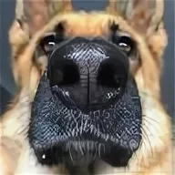

Собаки — верные друзья человека с древних времён. Они помогали древним людям на охоте, охраняли их жильё и стали первыми животными, которых человек приручил. Со временем собаки разделились на группы по хозяйственному назначению: сторожевые, охотничьи и декоративные. Сегодня собаки выполняют множество функций в жизни людей. Они согревают своим дружеским отношением, развлекают, охраняют дом и становятся настоящими друзьями для всей семьи. Существуют и специально обученные собаки, которые помогают людям в разных сферах деятельности, например, в спасении на воде, в милиции или в качестве поводырей для слепых. Собаки обладают множеством качеств, которые делают их незаменимыми помощниками и верными друзьями для человека. Они умны, обучаемы, понимают хозяина без слов и готовы всегда быть рядом. Очень здорово, когда у тебя есть пес. Ты приходишь с учебы, родители с работы, а он всех встречает. Лохматый друг очень рад своим хозяевам, скулит, лает, виляет хвостом, облизывает лицо, руки, да вообще с ног до головы. Это очень весело, радостно, приятно. С собакой ты никогда не будешь одинок. Пес придет, когда тебе грустно, больно, холодно, обидно, чтобы согреть и утешить. Он чувствует твою боль острее, чем собственную. Таким качеством отличается редкий друг. Это доброе, умное, верное существо никогда не предаст. Если вы откроете собаке сердце, то в ответ она непременно откроет свое. Важно любить свое животное, заботиться о нем, не обижать, лечить, если необходимо, делать прививки, вкусно кормить. Хотя собаки не обижаются. Они любят хозяина беззаветно, даже несмотря на обиды, боль, предательство. Для пса хозяин сродни Богу.